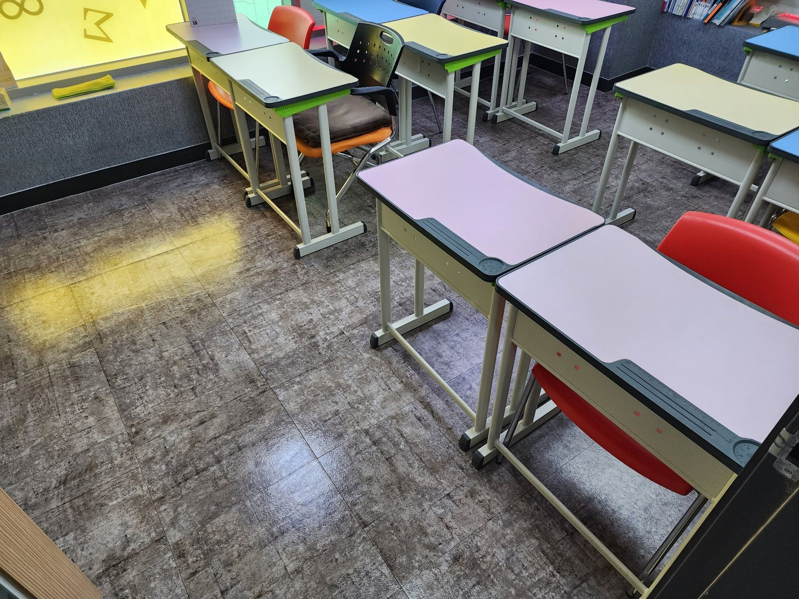
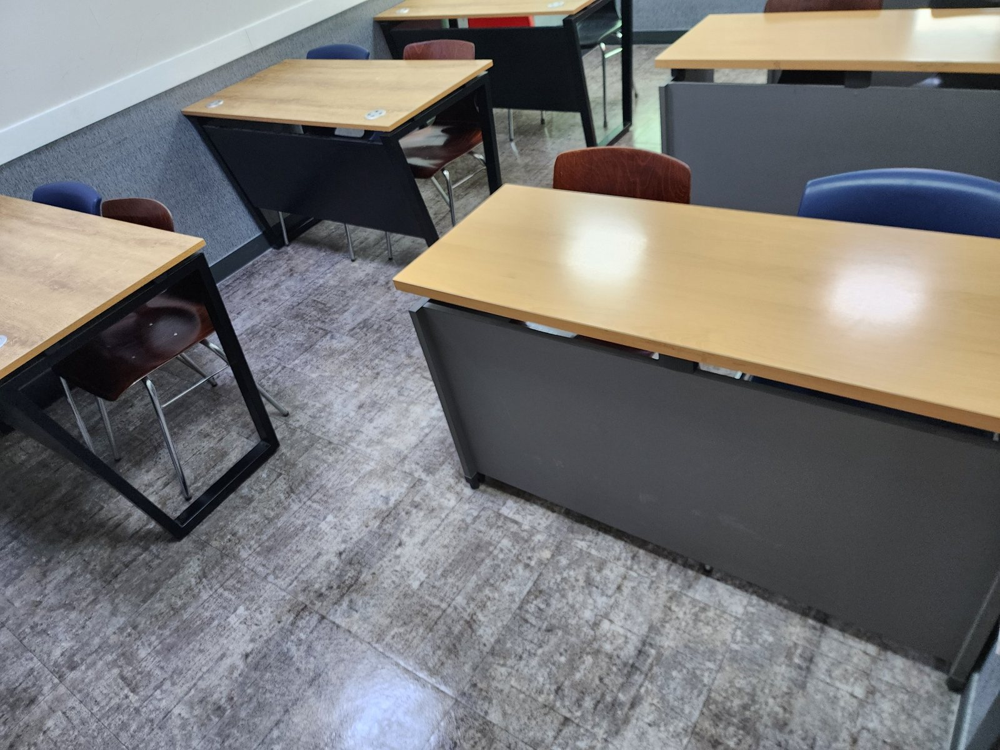
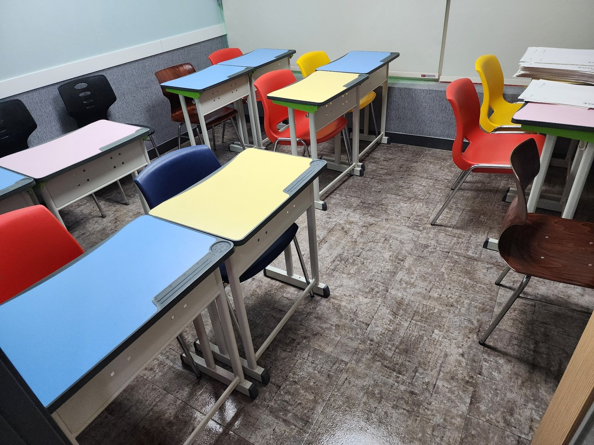
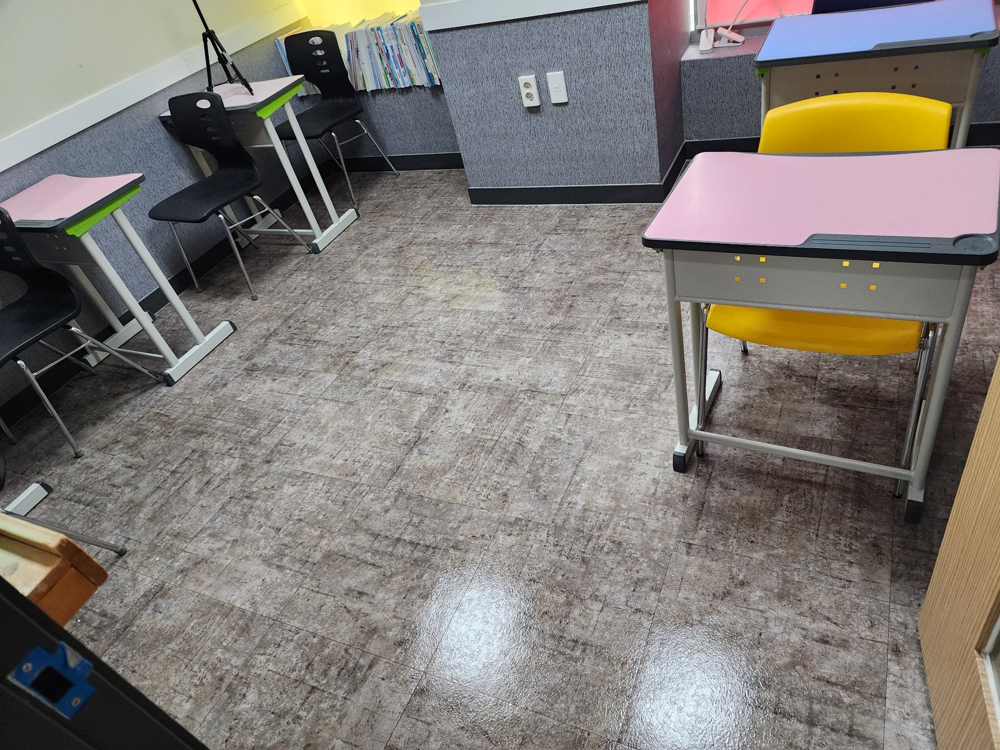
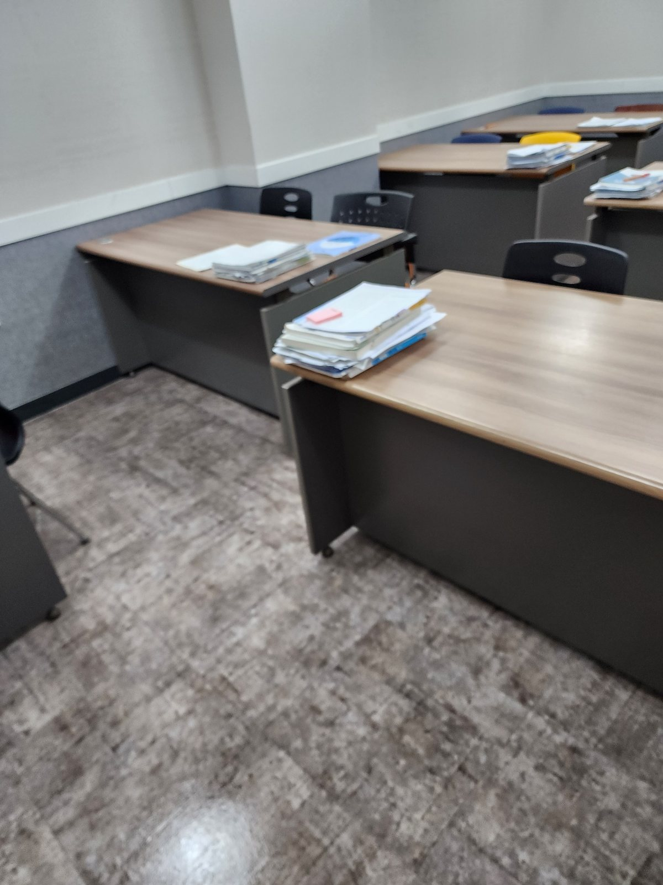
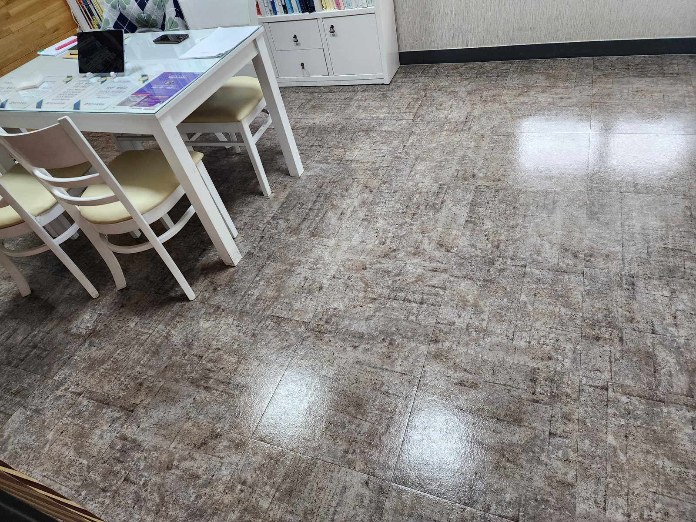
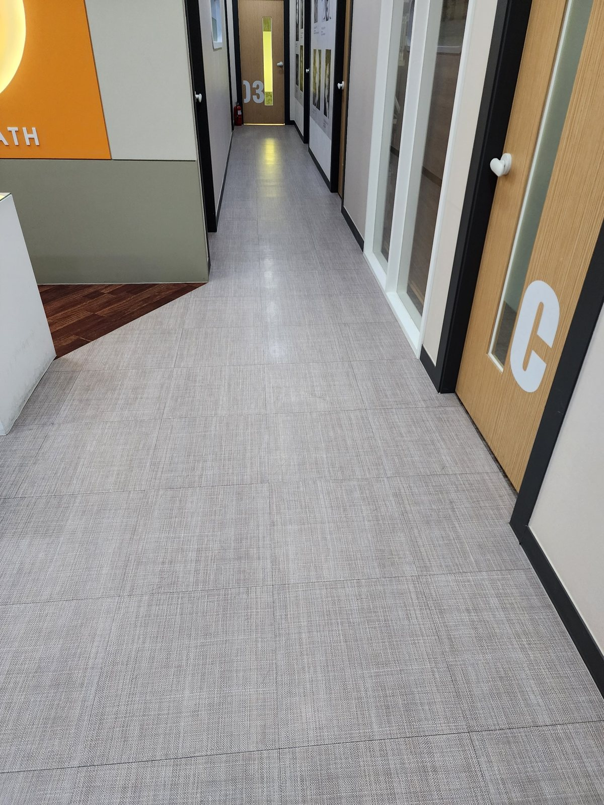

김해 학원 정기청소 | 교실·복도 바닥 관리
김해 지역 학원과 교육시설은 하루 동안 학생 이동이 반복되기 때문에 교실 바닥과 책상 아래, 출입구, 복도에 잔먼지와 생활오염이 빠르게 쌓입니다. 이번 작업사례는 교실과 상담·수업 공간을 중심으로 바닥 상태를 확인하고 좌석 사이 통로와 공용 동선을 정리한 현장입니다.
학원 정기청소는 단순히 바닥을 한 번 닦는 방식보다 교실 수, 학생 수, 수업 시간, 책상 배치와 이동 동선을 함께 확인해 관리 범위를 잡는 것이 효율적입니다.
현장 규모, 이용 인원, 운영시간, 오염 정도, 관리 범위를 확인한 뒤 무료 방문견적으로 안내합니다.
삼계동·내외동·장유·율하·주촌·진영·어방·삼방 등 학원과 교육시설이 많은 생활권을 중심으로 상담합니다. 교실 수, 학생 수, 수업 시간, 복도와 공용부 범위를 확인해 현장에 맞는 관리 주기를 안내합니다.
현장 사진으로 보는 관리 범위
아래 사진은 실제 공간을 기준으로 어떤 부분을 확인하고 관리하는지 설명한 내용입니다. 사진마다 바닥, 가구 주변, 위생도기, 공용 동선 등 관리 포인트를 구체적으로 정리했습니다.

교실 바닥 전체 상태 확인
학생들이 장시간 사용하는 교실은 책상과 의자 아래쪽, 출입구 주변, 벽면 쪽으로 미세먼지와 생활먼지가 쉽게 쌓입니다. 바닥 전체를 한 번에 훑기보다 가구 배치와 이동 동선을 확인한 뒤 구역을 나눠 정리하는 것이 중요합니다.

책상 아래와 강의 공간 주변 관리
책상과 의자가 많은 공간은 눈에 보이는 중앙 바닥보다 가구 아래와 모서리 쪽에 먼지가 남기 쉽습니다. 이동 가능한 의자와 집기를 정리한 뒤 바닥 가장자리와 통로까지 빠짐없이 관리합니다.

학생 좌석 사이 통로 정리
좌석 사이 통로는 학생들의 이동이 반복되는 곳이라 잔먼지와 신발에서 유입되는 오염이 누적되기 쉽습니다. 수업에 방해가 되지 않도록 정리 순서를 잡고 통로와 책상 다리 주변을 함께 관리합니다.

출입구와 벽면 주변 바닥 관리
교실 출입구는 외부 먼지가 가장 먼저 들어오는 구간입니다. 문 주변과 벽면 아래쪽은 오염이 한쪽으로 몰리기 쉬워 바닥 상태를 확인하면서 가장자리까지 꼼꼼하게 정리합니다.

수업 준비 공간까지 함께 관리
교재와 수업 준비물이 놓이는 공간은 물건 이동이 잦아 바닥 청소가 놓치기 쉽습니다. 통행에 필요한 공간을 확보하고 바닥에 남은 먼지와 미세오염을 정리해 수업 전 깔끔한 상태를 유지합니다.

상담·교사용 공간 바닥 정리
학생 공간뿐 아니라 상담실과 교사용 좌석 주변도 정기청소 범위에 포함할 수 있습니다. 책상 아래, 의자 바퀴 주변, 수납장 앞처럼 사용 빈도가 높은 곳을 중심으로 관리합니다.

학원 내부 공용 동선 마무리
여러 교실을 오가는 복도와 연결 공간은 교실에서 나온 먼지가 다시 퍼지기 쉬운 구역입니다. 각 교실 청소 후 공용 동선까지 정리하면 전체 공간의 청결 상태를 오래 유지하는 데 도움이 됩니다.
김해 정기청소 무료 방문견적
학원, 사무실, 공장, 상가, 화장실 등 사업장 유형과 이용량에 맞춰 관리 범위와 주기를 상담합니다. 정기청소는 현장 상황에 따라 주 1회부터 주 6회까지 상담 가능합니다.